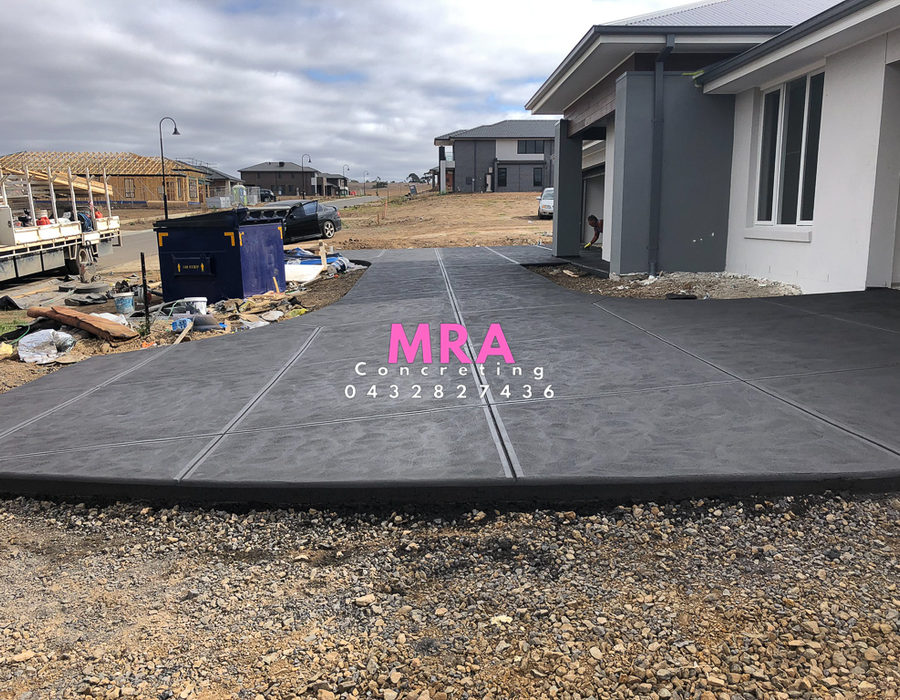
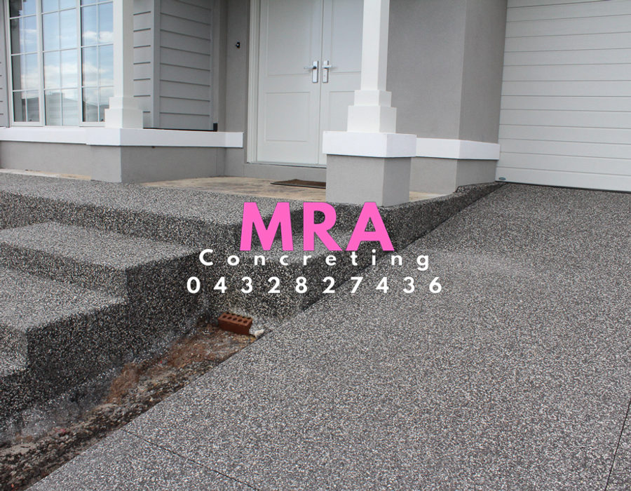
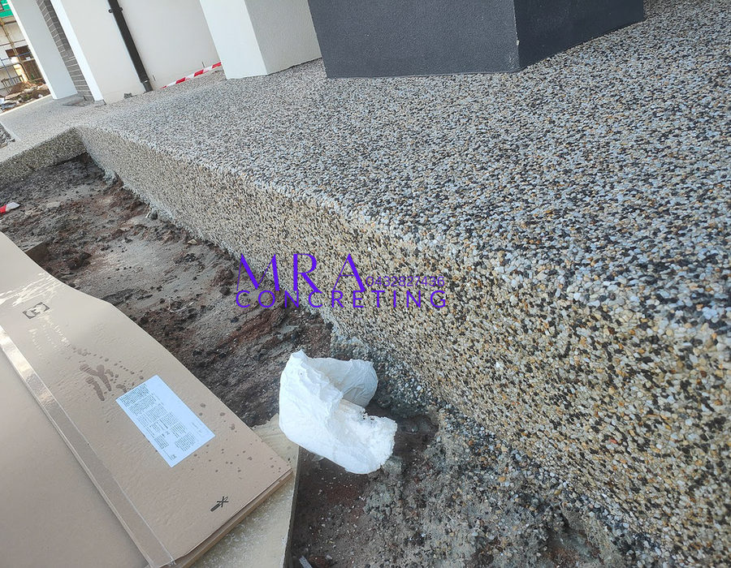
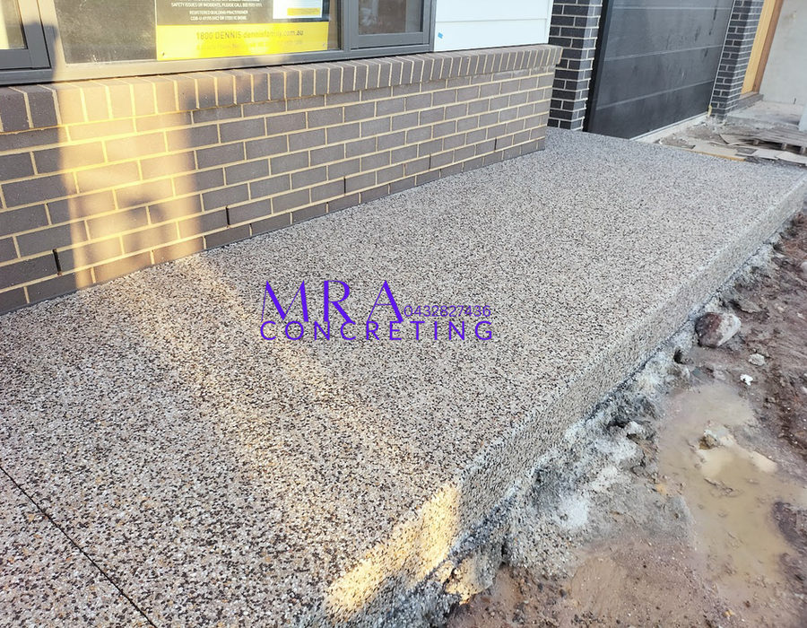
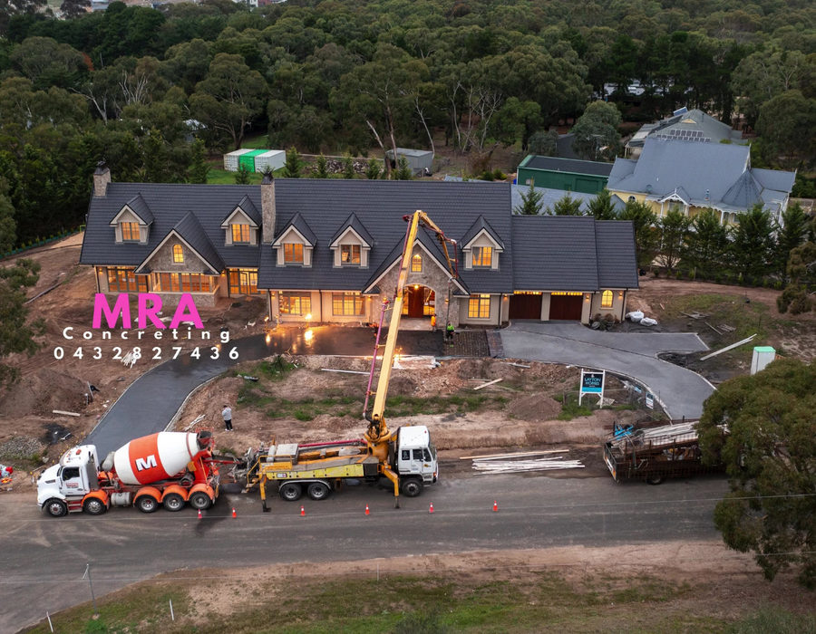
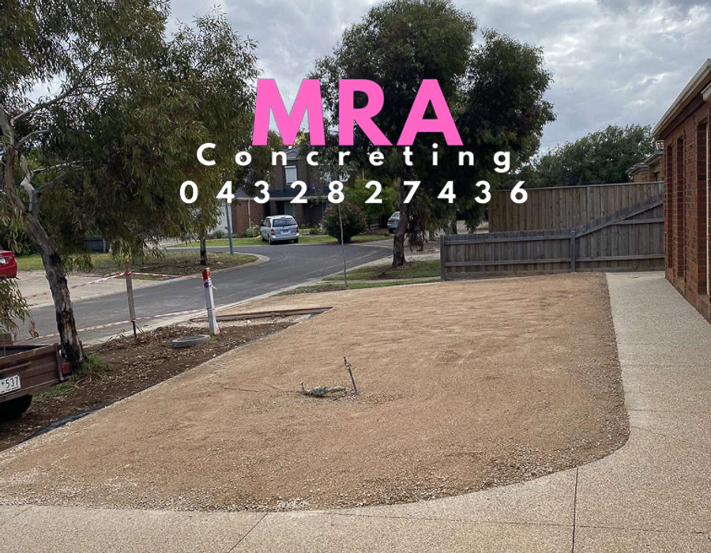
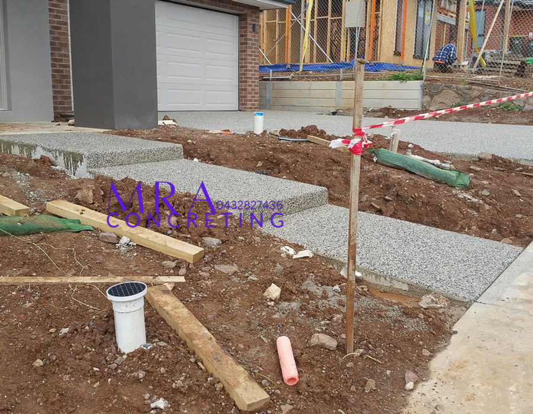
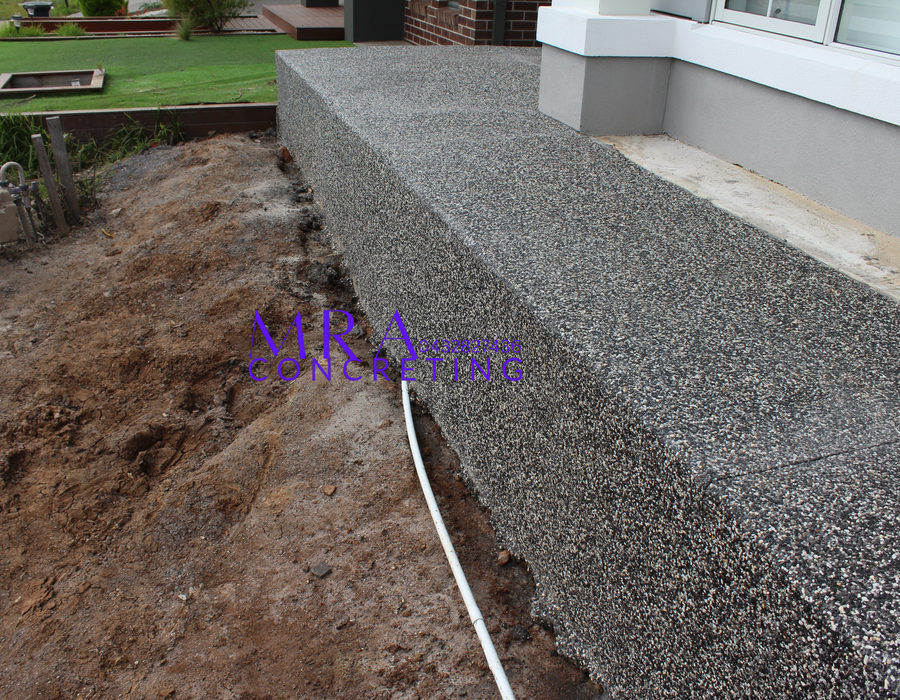

Exposed Aggregate
Exposed Aggregate
Exposed aggregate concrete includes multiple small demo cuts - which sets us aside from most concretors, acid washing & sealing.
Exposed Aggregate
Standard and custom mixes.
We are able to provide custom exposed aggregate mixes suitable to the client.
There may be minor variations in the consistency of colours, textures and appearance of the finished concrete as the basic raw materials are natural and subject to variations beyond our control.
Computer monitors and even the original photograph may distort colours and falsely portray the finished exposed mix. Customers should always view the samples.

Preparation
Crushed rock base and F62 mesh.
Concrete
100mm thick concrete minimum.
Demo Cuts
Multiple small demo cuts.
Finish
Acid washing and sealing.
Projects
Exposed Aggregate Work






